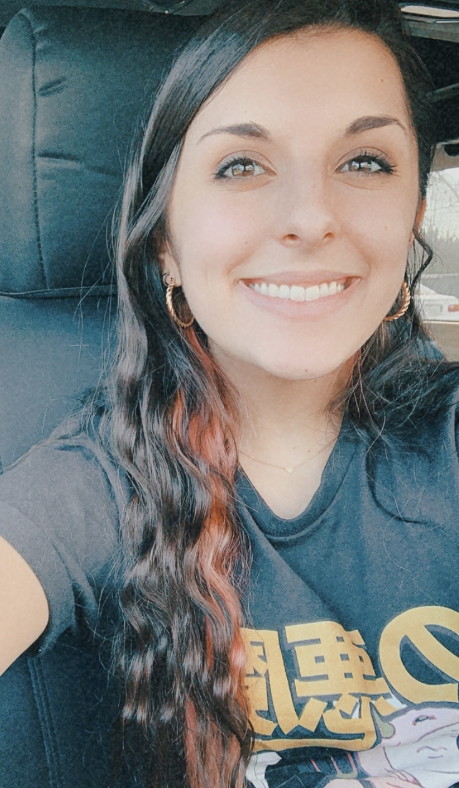

About Me

Sarah V. Braddock
Aspiring writer pursuing a Journalism degree from the University of Miami.
The human experience is something that we all share.
Music, physical and emotional wellness and self-exploration all serve as avenues of deeping our personal and shared adventures.
Exploring this deeper within myself and others through writing and design is something I hope to transform into a lifelong career.
I hope you reap something from my work, whether now or in the future, that helps you become further cemented in your humanity and connects you to yourself and others.
MN2S International Music and Talent Agency Miami, FL Copywriting Intern: January 2020 - Present
- Corresponded with other interns through Google Sheets
- Utilized AP Style and SEO formatting guidelines
WVUM The Voice of the University of Miami, Coral Gables, FL Blog Staff Member: August 2017 - Present
- Sent to cover local concerts and interact with venue contacts professionally
- Wrote concert reviews in a timely manner to ensure continued support from venues
Metiza Magazine, Seattle, WA Remote Copywriting Editorial Intern, Social Media Coordinator: May 2018 - Dec. 2019
- Responsible to pitch and write two articles per week for online publication
- Coordinated, through application Asana, with other interns
- Given responsibility of Facebook and Twitter social media platforms during second semester interning
- Designed and scheduled posts for every published article through applications Easil and Later
Patti and Herbert Wellness Center, Coral Gables, FL Fitness Room Assistant: February 2019 - Present
- Resolved conflict regarding enforcement of fitness room policies
- Assisted patrons with questions and concerns